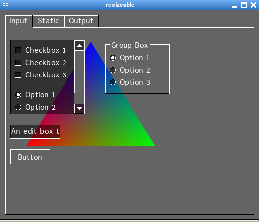
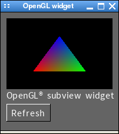

SGUI
Advanced usage
SGUI & OpenGL®


The SGUI library has native support for OpenGL® rendering, both using the
older 1.x and 2.x versions, as well as using the 3.x and above core profile
versions.
This means that not only can SGUI create a window with an OpenGL® context,
it can treat it just like a normal window and add widgets to it, without the
any additional care taking after the backend change (try to run the demo
program with "--glcompat" or "--glcore"). The window can either be entirely
managed by SGUI, or the program can take control over event processing and
rendering, to allow real time rendering in the same window with full controll
over how and when the GUI is to be rendered.
Also, SGUI offers an OpenGL® widget, allowing easy creation of dedicated
areas within a window to use for OpenGL® rendering.
Creating a managed OpenGL® window
The code for a small example program can be found in the file extras/gl0.c.
For the sake of simplicity, compatibillity profile has been used.
To create a window with an OpenGL® context, the
sgui_window_create_desc
function has to be used instead of the regular sgui_window_create function.
The sgui_window_create_desc function uses a pointer to an
sgui_window_description
structure that can hold advanced parameters.
In the case of OpenGL® windows, the following fields are of interest
to us:
- backend This field specifies what backend the window should use. To use the plain, normal
window system, specify SGUI_NATIVE. For OpenGL® rendering, specify either
SGUI_OPENGL_CORE or SGUI_OPENGL_COMPAT. The former uses a core profile context
while the later uses compatibillity profile.
- doublebuffer Set this to a non-zero value (or SGUI_DOUBLEBUFFERED)
to request a context with a distinct front and back buffer.
- bits_per_pixel This specifies the number of color bits per pixel (valid values: 16, 24 or 32)
- depth_bits This specifies the number of depth bits per pixel, 0 means don't create a depth buffer
- stencil_bits This specifies the number of stencil bits per pixel, 0 means don't create a stencil buffer
- samples This specifies the number of samples per pixel for multisample anti aliasing, 0 means don't use
MSAA
When creating the window with the description structure pointer, an OpenGL®
context is created automatically. The window behaves like a regular SGUI
window. Widgets can be attached to it and it handles events. The are only a
few differences:
- The widgets are drawn using the OpenGL® API
- When something has to be redrawn, the entire window is redrawn
- An SGUI_EXPOSE_EVENT event is generated after clearing and
right before the widgets are drawn
In order to draw to the window, just hook a window
event callback to the window that uses regular OpenGL® function to
draw the window background when an SGUI_EXPOSE_EVENT is generated.
You don't need to worry about making the context current, clearing the
color buffer to the background color, swapping buffers once drawing is done,
or even adjusting the viewport to the window size. Everything is done
automatically. You can even have multiple OpenGL® windows and it will just
work.
The window can be used just like every other normal SGUI window, however it
is not suited for interactive OpenGL® rendering demands (i.e. pumping out
frame after frame at interactive frame rates), since the window is only
redrawn when it has to.
We will address that issue in the next section.
Creating a manually managed OpenGL® window
The code for a small example program can be found in the file extras/gl1.c.
For the sake of simplicity, compatibillity profile has been used.
To render at interactive frame rates, the behaviour of the SGUI main loop has
to be altered and, since normal widget rendering would come in the way, you
also need to override the widget rendering of the window itself. But with
SGUI, this is way easier than it sounds.
The window is created in the very same way as in the section above. The major
difference here is, that rendering is done inside the main loop instead of
an event function. After creating the window and before entering the main
loop, automatic widget drawing has to be disabled and the rendering context
has to be made current.
Widget rendering can be disabled by a call to
sgui_window_override_drawing,
passing SGUI_OVERRIDE_ALL as a second parameter, to disable widget
rendering, background clearing and event processing for the widgets.
Making the rendering context current just requires a call to
sgui_window_make_current.
The major difference is the main loop:
while( sgui_main_loop_step( ) )
{
glClear( GL_COLOR_BUFFER_BIT );
...
sgui_window_swap_buffers( wnd );
}
Instead of calling the regular sgui_main_loop,
the sgui_main_loop_step function is used.
This function just receives one window system message, processes it,
and returns immediately. If there are no messsages, it returns immediately.
The return value is non-zero if there are still visible windows. After every
main loop step, rendering to the window is performed. At the end of the loop,
when rendering is done, the
sgui_window_swap_buffers
function is called to swap the front and the back buffer (in case of double
buffering). This way, rendering at interactive frame rates can be achived.
In some applications, it might be of interesst to occasionally enable normal
user interface rendering (widgets and what not) ontop of the interactive
OpenGL® rendering. This can be achieved easily using the handy
sgui_window_override_drawing
function. To renable UI drawing, pass SGUI_OVERRIDE_DRAW as second
argument. This re-enables internal event processing for widgets. All that's
left to do, is get the canvas object from the window (more on that in the
hacking chapter), using the
sgui_window_get_canvas
function and then, force drawing of all widgets using the
sgui_canvas_draw_widgets
function after drawing to the window.
Creating an OpenGL® subwindow
Normally, when an application needs OpenGL® rendering to display
something, but does not neccessarily need interactive rendering, something
like a small display area inside a normal window is desired. Of course, SGUI
supports just that too.
If you read the doxygen documentation on the sgui_window_description
structure (or read the header), you may have noticed, that the structure has a
parent attribute. Using this attribute, a window (may be with an
OpenGL® rendering context) can be created that resides undecorated,
untouched by the window manager inside a regular window.
To make your life easier, SGUI provides you with a nice widget that
encapsulates just that in a simple interface and behaves like a normal widget.
The widget in question is called
subview widget. It can be
created like a normal widget, attached to a window, or even as a child widget
to another widget, and so on.
To draw to the widget, a callback can be registered that is called as soon as
the underlying window requires redrawing. Again, making the context current,
setting the viewport, clearing the background and swapping the buffers is
already taken care off.
In addition, a callback can be registered that receives events from the
underlying window (mouse movements, keyboard actions, etc...) and the window
itself can be obtained to, for instance, attach widgets to the subwindow or
do other fancy stuff.
Previous
Back to index
Next